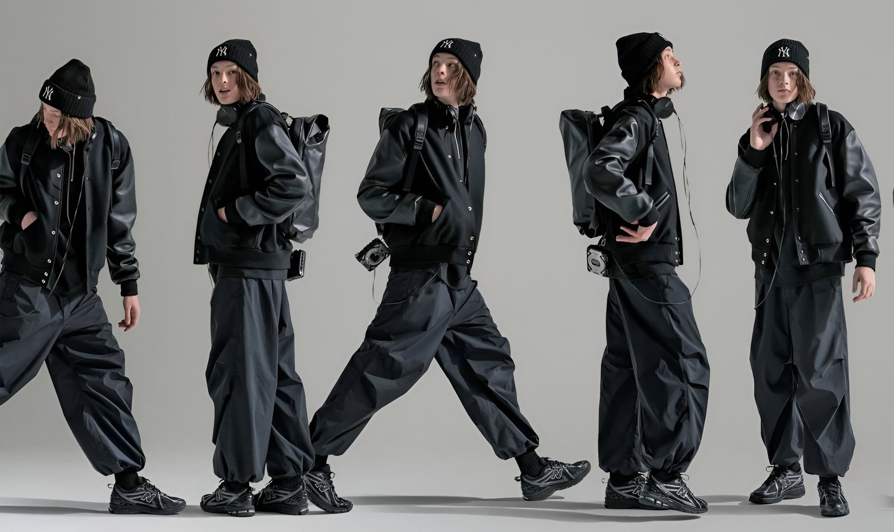
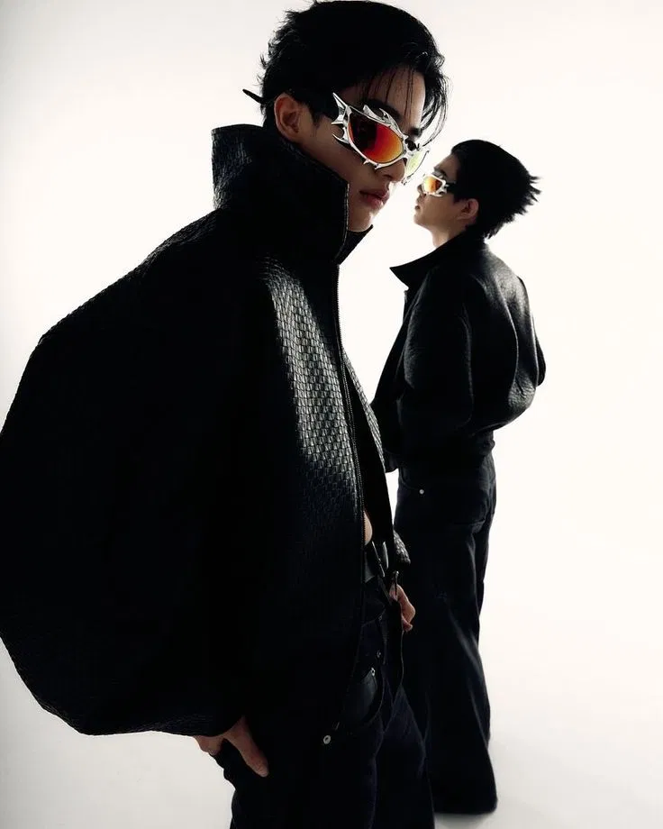
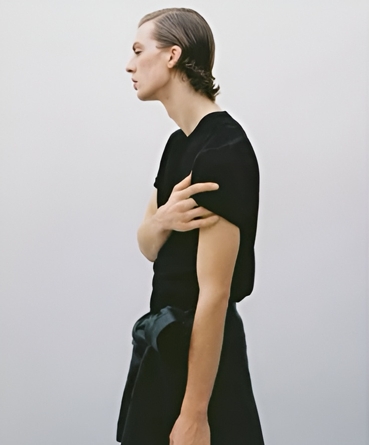
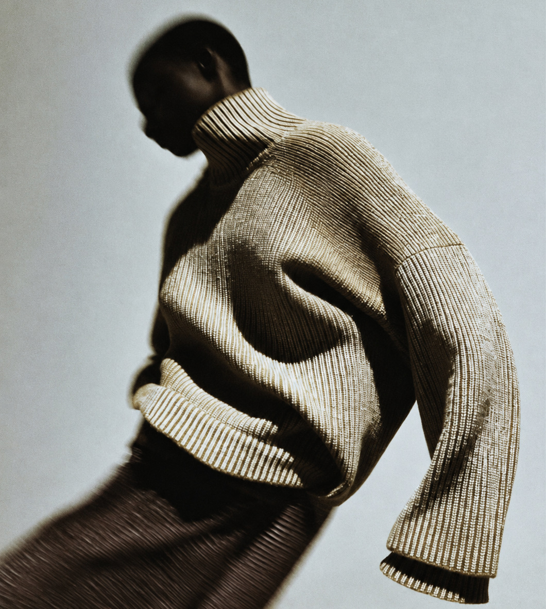

ESSENCE

The art of getting dressed
Find your own point of view.
Build a wardrobe around the pieces that feel like you. Keep it simple, make it personal, and wear it your way.
EXPLORE OUTFITS

Building a strong visual identity that feels authentic is the key to creating memorable digital experiences.
Less, but with intention